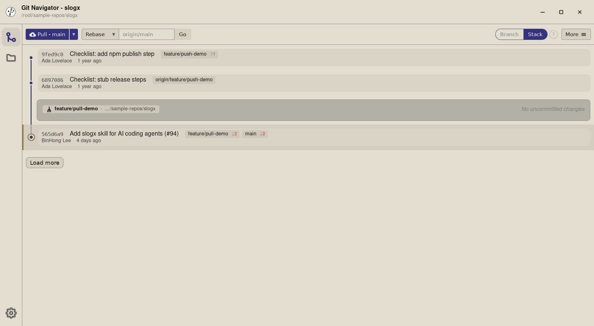
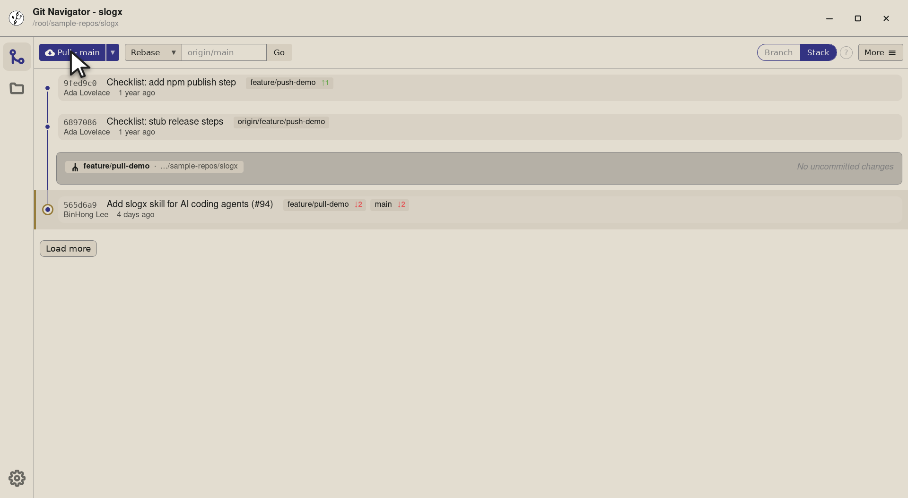
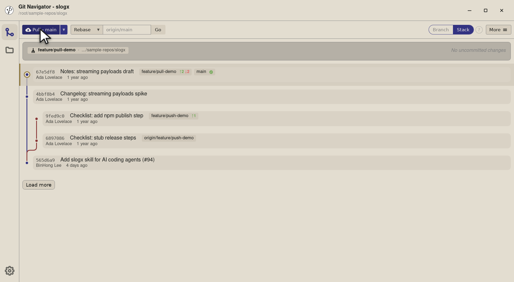
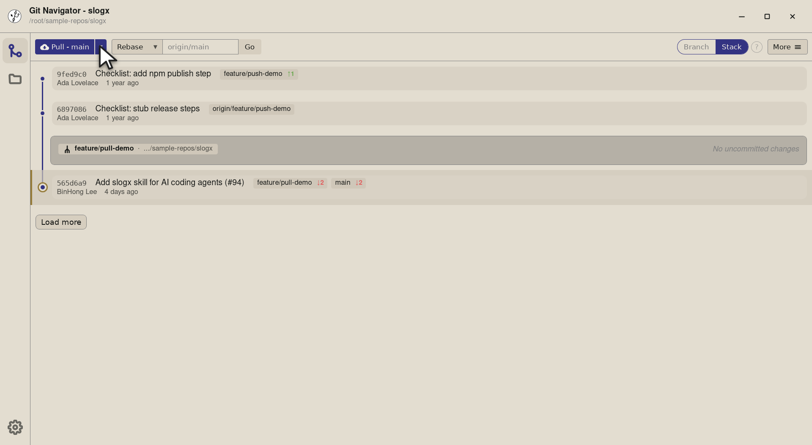
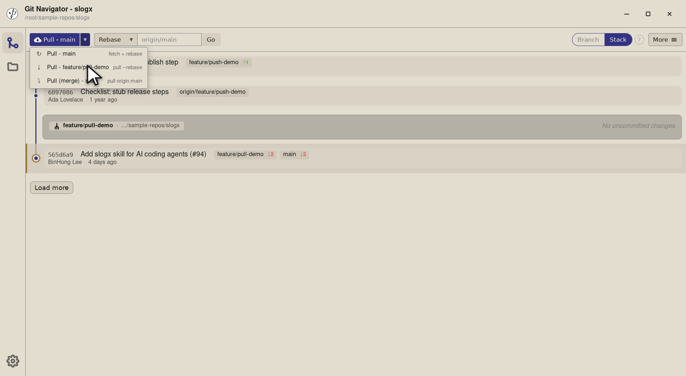
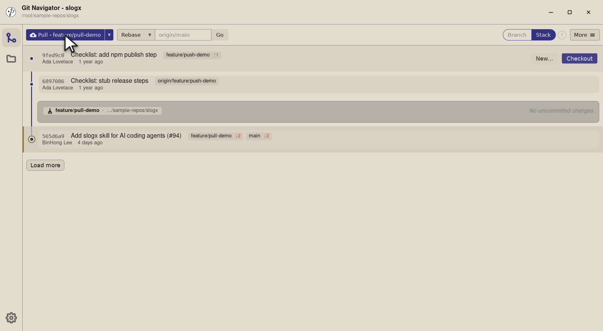
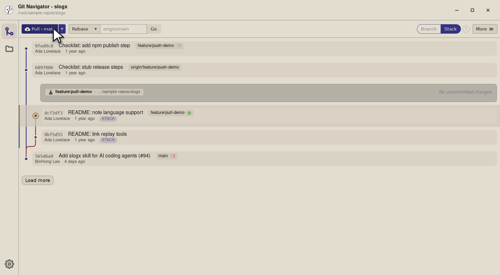
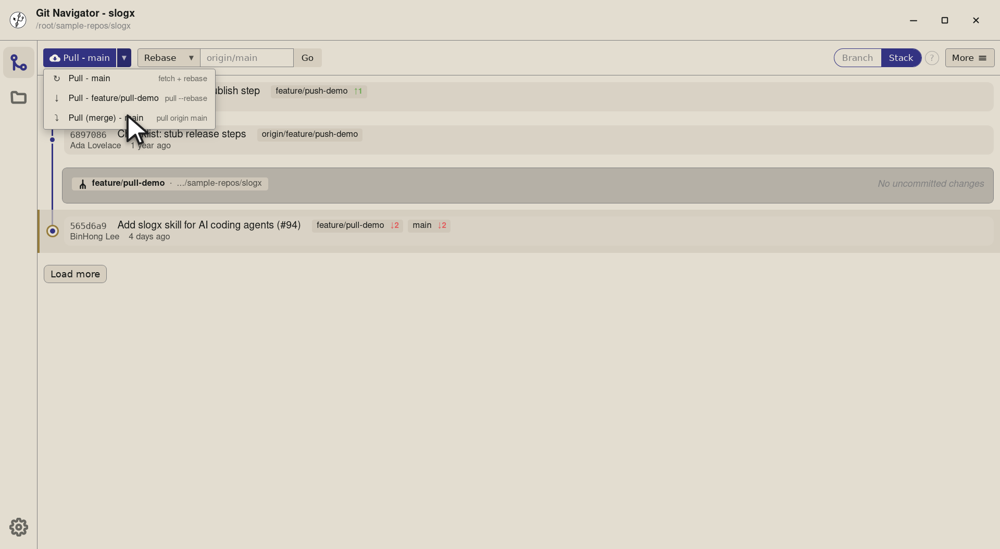
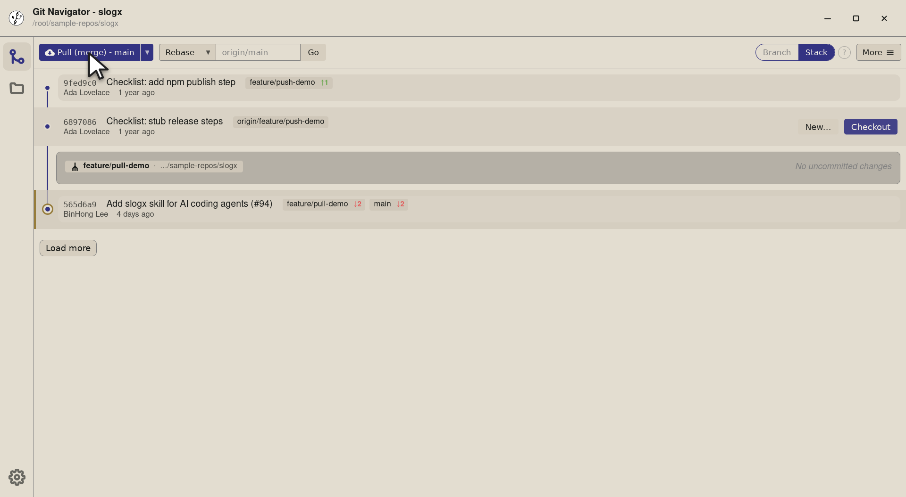
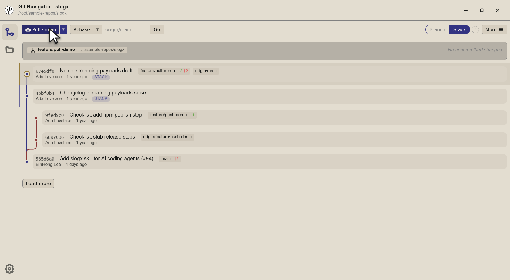

Git Navigator's pull button is a split control: the primary action is a one-click pull, and the dropdown reveals three explicit strategies. Rebase against the default branch to keep a long-lived feature on top of main; rebase against the current branch's upstream for a routine sync; or merge if your team prefers merge commits on long-lived integration branches.

The primary mode (Pull - main) fetches and rebases the current branch onto origin/main. Perfect for long-lived feature branches that need to stay current with the default branch.
When your branch already has a remote counterpart that's ahead of you, Pull - {branch} runs git pull --rebase against that upstream. Routine catch-up, no surprises.
Pull (merge) - main brings the default branch in with a merge commit — useful when your team prefers an explicit merge for long-lived integration branches over a rewritten history.
On the default branch (main) the dropdown chevron is hidden — there's nothing to choose between. The moment you check out a feature branch, the chevron appears with the three modes ready to pick.
feature/pull-demo — the pull split button names its current target. The default mode is Pull - main: fetch + rebase the current branch onto origin/main.

git fetch then git rebase origin/main — your feature branch lands on top of the latest default. The graph re-renders with the new topology in place.

git pull --rebase against the current branch's own upstream. Use this when your feature has a remote counterpart that's drifted ahead of you (a teammate pushed, or a CI bot updated it).

git pull --rebase on the current branch's upstream. The graph fast-forwards (or rebases) onto the new tip and the dropdown stays primed on this mode for the next time you sync.
git pull origin main (no --rebase). Picks this when your team prefers an explicit merge commit on integration branches over a rewritten history.

git pull origin main. The new graph shows the merge commit explicitly — useful when reviewers want to see where the integration happened rather than a fast-forward.origin/main. A long-lived feature branch stays linear and current.On the default branch there's only one meaningful pull strategy (fetch + integrate the upstream), so Git Navigator hides the toggle to keep the toolbar uncluttered. The split button collapses into a single-click pull. The chevron returns the moment you check out a non-default branch.
Both target the same remote branch (origin/main), but the strategy differs: Pull - main runs a fetch + rebase (current branch is replayed on top of origin/main), while Pull (merge) - main runs a fetch + merge (a merge commit lands in your history). Pick rebase for a linear history, merge for an explicit integration record.
Within a session, yes — picking a row from the dropdown updates the main button's label and that's what the next click runs. Switching branches resets the default to Pull - {default-branch}.
Git Navigator pauses on its conflict view with every conflicted file listed and block-level keep-ours / keep-theirs / both actions. Once resolved, the rebase or merge continues automatically.
Yes — use the Fetch control next to the pull button. Type any ref (like origin/release/0.0.x), pick Fetch + Rebase, and Git Navigator runs git fetch + git rebase {ref} against your current branch.